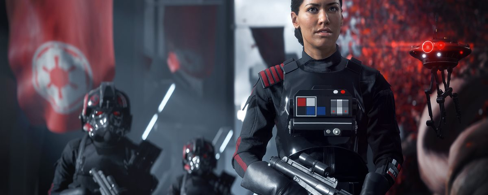

Star Wars Battlefront II não terá Season Pass, mas terá Early Access
19 ABR 2017 - 17H00

Não adianta: o sistema de passe de temporada é algo comum atualmente, mas ele ainda não desce pela garganta de muita gente. Afinal, trata-se de um modelo que cobra previamente por conteúdo extra de um jogo que, muitas vezes, nem foi lançado ainda. Parece que a EA está aprendendo com os erros e decidiu: Star Wars Battlefront II não terá Season Pass.
Se você se lembra, o primeiro jogo foi muito incrível e trouxe bastante conteúdo interessante, mas se visto por um escopo maior, trazia poucos mapas, heróis e armas, algo que só foi suprido com DLCs pagas ao longo do tempo. Por conta disso, o segundo game não seguirá essa fórmula. Ou pelo menos é isso que está imperando até o momento.
Alguns executivos da EA Games não quiseram confirmar, enquanto outros disseram que o game não terá o passe de temporada. A própria pré-venda ressalta isso, já que não teremos as três versões padrão: normal, deluxe e ultimate. Mas isso não quer dizer que a EA não pensa em outras formas de ganhar dinheiro extra com o título de Star Wars.
“Quando olhamos como Battlefront se desenvolveu, com as DLCs e tudo mais, nós decidimos que que para esse tipo de jogo, o passe de temporada não é a melhor coisa. Nós precisamos tirar isso e colocar algo melhor”, explicou o diretor Bernd Diemer.
Atualmente, Battlefront II tem uma edição mais cara que oferece Early Access, permitindo que os jogadores desfrutem da experiência alguns dias antes do lançamento oficial. Star Wars Battlefront II chega no dia 17 de novembro para PC, Xbox One e PlayStation 4 (dia 9 para membros do Early Access).
Fonte: GAMEPUR
Imagen(s): ORIGIN